В Древна Гърция философите не само гледали към звездите — те ги
измервали, опитвали се да ги разберат и опишат. Евклид положил основите
на геометрията, а Аполоний Пергски се задълбочил в изучаването на
коничните сечения – кръгове, елипси, параболи и хиперболи – и им дал
техните имена. Тези форми, които днес описват не само криви в
тетрадката, са и реалните пътища на спътници и ракети, планетарните
обекти в Слънчевата система и в Космоса.
По-късно, в зората на модерната наука, Тихо Брахе, въоръжен с примитивни
инструменти, измервал положението на планетите с нечувана точност. Той
натрупал солидна библиотека от статистически данни, които обаче пазел за
себе си от страх да не бъде изместен от почетното си място на най-виден
астроном на своето време.
Въпреки опитите му да осуети изследванията на своите съвременници, без
да иска той направил услуга на своят асистент Йоханес Кеплер,
предоставяйки му данни за орбиталното движение на планетата Марс.
Йоханес Кеплер, използвайки тези данни, формулирал трите закона за
движението на планетите – математически модели, които и до днес описват
орбиталната механика.
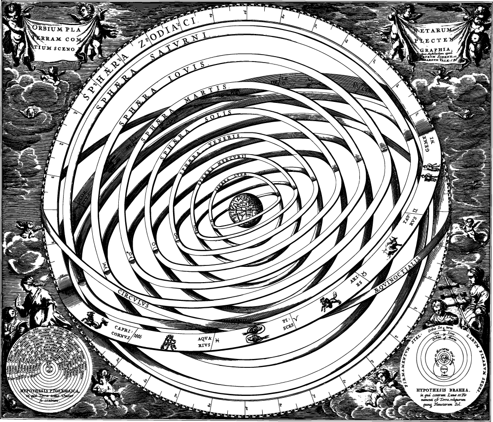
Птолемеева карта на Слънчевата система. Земята е в центъра, а
планетите и Слънцето са разположени около нея.
От Аристотеловата представа за кристалните небеса, съставени от
квинтесенция до Коперниковия модел със Слънцето в центъра, от
Птолемеевите епицикли до съвременните ракети на SpaceX — пътят на
човешкото разбиране за Вселената е изчертан с пергел и транспортир и
разбира се формализиран с помощта на математиката.
Днес, благодарение на лазери, тригонометрия и аналитична геометрия,
можем да измерим разстоянието до Луната с точност до сантиметър, да
планираме орбита с минимален разход на гориво и да върнем ракета обратно
на платформа в океана? Как го постигаме? С помощта на идеи, зародили се
преди хилядолетия. Ще проследим как математиката превръща невъзможното в
реалност – от древните конични сечения до съвременните космически мисии.
За да разберем как математиката прави възможно всичко това, трябва да се
обърнем към основните ѝ инструменти – евклидовата геометрия,
тригонометрията, аналитичната геометрия, както и концепцията за движение
по елиптична орбита. В основата стои разбирането на коничните сечения –
фигури, които не просто съществуват в теорията, а описват самото
поведение на телата в Космоса.
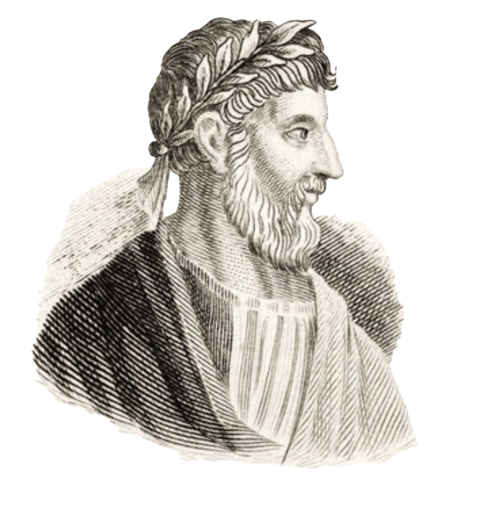
Аполоний от Перга
Ако древногръцкият математик Аполоний можеше да погледне към
траекторията на съвременна ракета, той вероятно би я разпознал веднага –
не като нещо от бъдещето, а като една от онези криви, които сам е
изучавал още преди повече от две хилядолетия. Защото именно коничните
сечения, възникнали от прости геометрични конструкции, стоят в основата
на движението на небесните тела.
Когато равнина пресече конус под различен ъгъл, се получават четири
основни криви – окръжност, елипса, парабола и хипербола. Макар и с
произход от чистата геометрия, тези фигури описват реални пътища на
планети, комети и космически апарати. В езика на съвременната астрономия
те се наричат орбити.
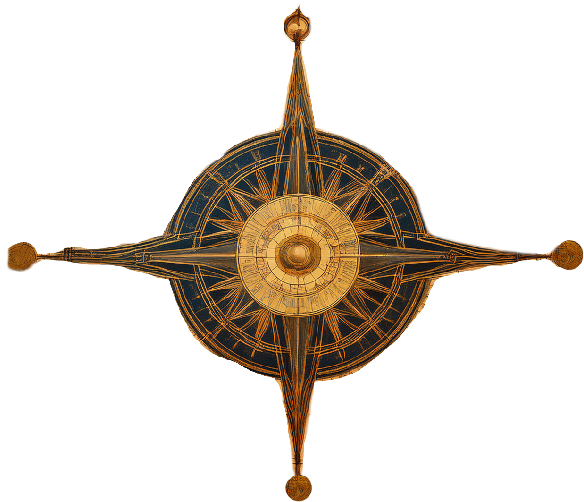
След като Коперник смело поставил Слънцето в центъра на Слънчевата
система, задачата на учените от XVII век била да обяснят движението на
планетите около него. Йоханес Кеплер, използвайки наблюденията на Тихо
Брахе, открил, че орбитите на планетите не са идеални окръжности, както
се е вярвало дотогава, а елипси. Така той съставил трите си закона.
Първият закон на Кеплер гласи, че всяка планета се движи по елипса, в
единия фокус на която се намира Слънцето. Това откритие е било
революционно, защото за пръв път се поставя в центъра не симетрията, а
реалните наблюдения.
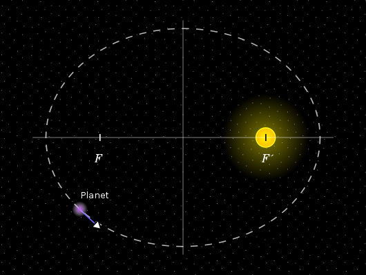
Първи закон на Кеплер
Елипсата е дефинирана като геометрично място от точки в равнината, за
които сумата от разстоянията до две фиксирани точки (фокуси) е
постоянна. Ако имаме елипса с център в точката \( (h, k) \) и основната
ос успоредна на оста \( x \), то стандартното уравнение на елипсата е:
\[ \frac{(x - h)^2}{a^2} + \frac{(y - k)^2}{b^2} = 1 \] където \( a \) е
дължината на голямата полуос, а \( b \) – на малката полуос. Колкото
по-различни са \( a \) и \( b \), толкова по-удължена е елипсата.
Степента на тази „сплеснатост“ се описва чрез ексцентрицитета \( e \),
изчисляван по формулата: \[ e = \sqrt{1 - \left(\frac{b}{a}\right)^2} \]
Когато \( e = 0 \), елипсата се превръща в окръжност – случай, който
почти не се среща в природата. В диапазона от 0 до 1 са елипси, при \( e
= 1 \) параболи, а над 1 – хиперболи. В Слънчевата система планетите се
движат по орбити с малък, но ненулев ексцентрицитет – Земята например
има \( e \approx 0.017 \).
Вторият закон на Кеплер описва динамиката на движението: когато
планетата е по-близо до Слънцето (в перихелий), тя се движи по-бързо;
когато е по-далеч (в афелий) – по-бавно. Законът гласи, че отсечката,
свързваща планетата и Слънцето, описва равни площи за равни интервали от
време. Това е не просто геометричен факт, а отражение на запазването на
ъгловия момент – фундаментален физичен закон. Без да навлизаме в
по-специализирани физични формули, можем да кажем, че ъгловият момент
съчетава информация както за позицията на тялото, така и за посоката и
скоростта му на движение. Всъщност той е векторно произведение на
радиус-векторът между двете тела (фокусът и орбитиращото тяло) и
скоростта, която от своя страна е нищо повече от първа производна на
радиус вектора спрямо времето. Така, чрез чисто математически аргументи,
можем да опишем не само траекторията на движение (елипса), но и
поведението на тялото по нея – скорост, ускорение и „геометричната
равномерност“ на движението, изразена чрез ъгловия момент.
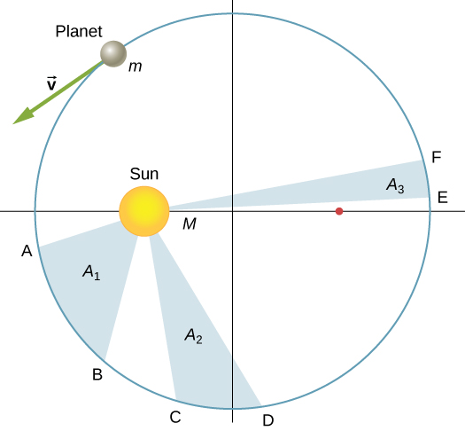
Втори закон на Кеплер
Третият закон на Кеплер е може би най-елегантният: квадратът на
орбиталния период \( T \) е пропорционален на куба на дължината на
голямата полуос \( a \): \( T^2 \propto a^3 \)
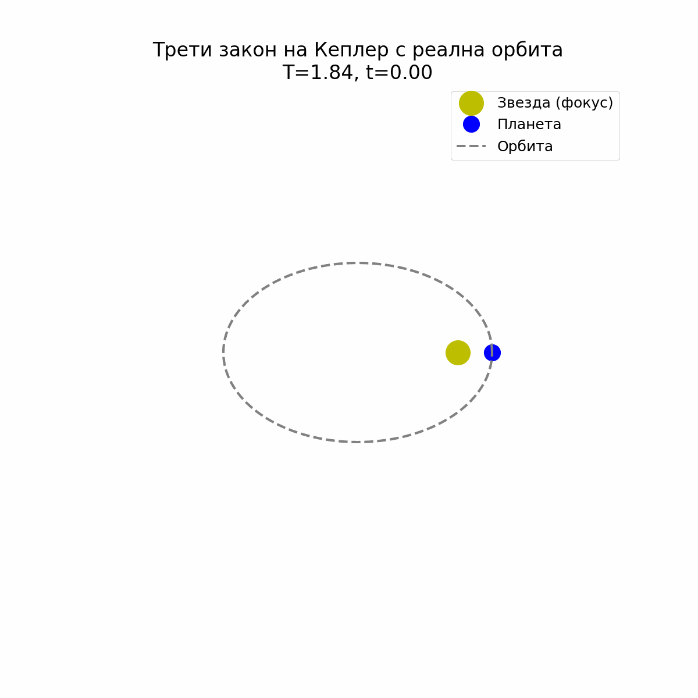
Трети закон на Кеплер
Тази проста зависимост позволява, ако знаем разстоянието на планетата до
Слънцето, да изчислим колко време ѝ е нужно да направи една пълна
обиколка. Например, Марс се намира на около 1.52 астрономически единици
(AU) от Слънцето и прави една обиколка за 1.88 земни години – точно
както предсказва формулата.
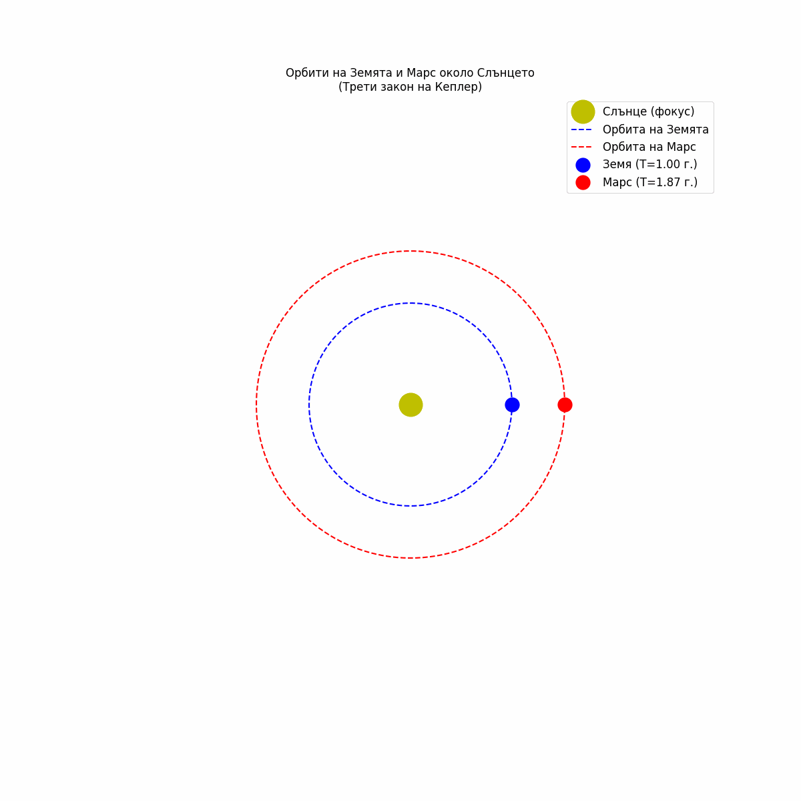
Симулация на орбитите на Марс и Земята
Тези три закона са изцяло емпирични – извлечени от наблюдения, а не от
първични принципи. Въпреки това те описват с удивителна точност реалните
движения на планетите. По-късно във времето Нютон ги обяснява с помощта
на своя закон за гравитацията, показвайки, че всяка от коничните орбити
е решение на уравнение за движение под централна сила. Днес, когато
учени планират траекторията на космически апарат, те не използват магия
или догадки. Те използват точно тези формули – наследство от Аполоний и
Кеплер – за да определят, например, как сондата Juno да бъде изпратена
към Юпитер така, че да използва гравитацията на Земята като прашка и да
достигне до целта с минимален разход на гориво. Съвременната орбитална
механика е изградена върху костите на античната геометрия и плътта на
модерната физика.
Ако в миналото астрономите наблюдавали небесата с просто око и мерели
разстояния с аршини на догадки, днес те разполагат с невероятно прецизни
методи. Един от най-впечатляващите е лазерната лунна далекомерна система
(Lunar Laser Ranging, LLR) – метод, с който се измерва разстоянието от
Земята до Луната с точност до няколко сантиметра. И в основата ѝ лежи не
друго, а тригонометрията и аналитичната геометрия – старите
математически инструменти на Евклид и Виет, модернизирани с лазери и
компютри.
Методът е елегантно прост: от Земята се изстрелва къс лазерен импулс към
специален рефлектор, поставен на Луната по време на мисиите „Аполо“.
Част от този лъч се връща обратно и се засича времето, което той е
пътувал. Тъй като скоростта на светлината \( c \) е известна
(приблизително \( 299\,792\,458 \, \text{m/s} \)), разстоянието \( d \)
може да се изчисли чрез формулата: $$ d = \frac{c \cdot \Delta t}{2} $$
където \( \Delta t \) е времето за отиване и връщане на сигнала.
Делим на 2, защото измерваме пътя до Луната и обратно. Но
измерването на това време с точност до наносекунда не е достатъчно. За
да се коригират ефекти като движението на Земята, въртенето ѝ,
атмосферната дисперсия и дори приливното отклонение на Луната, учените
използват тригонометрични модели и координатни трансформации в реално
време.
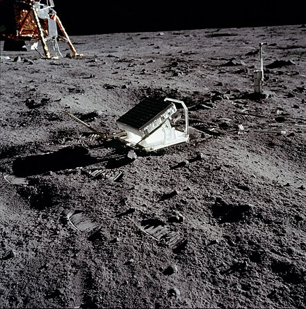
Рефлектор на Луната, поставен по време на мисията "Аполо"
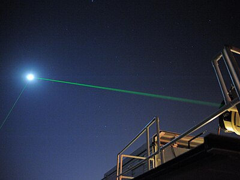
Лазер, изпратен от Земята за засичане на разстоянието до Луната
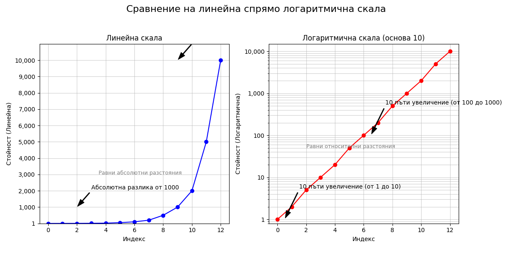
Сравнение между логаритмична и линейна скала
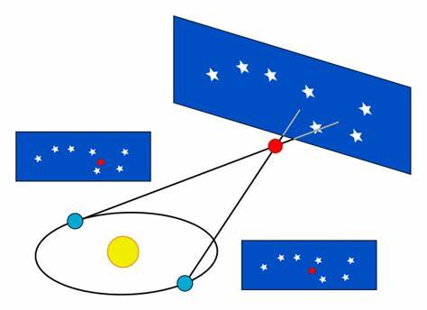
Методът на Хипарх
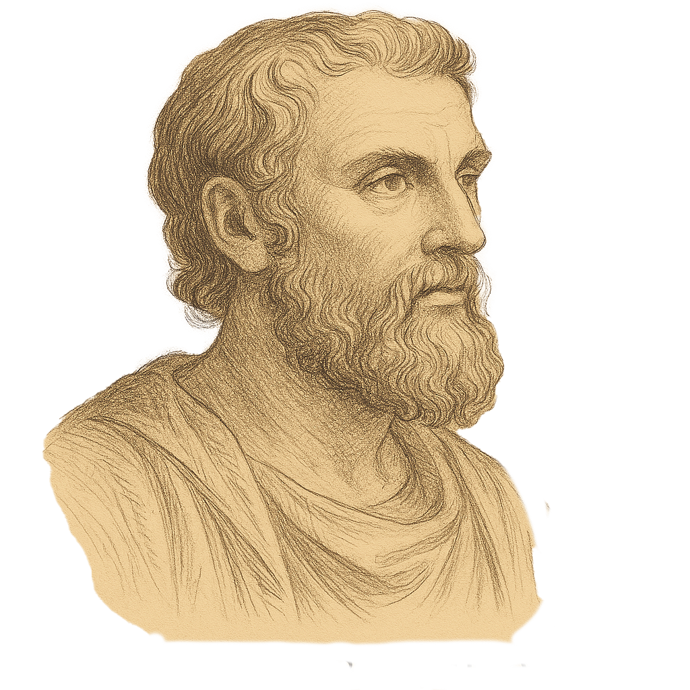
Хипарх, предполагаем външен вид, понеже не се знае как е изглеждал
Освен измерване на разстояние чрез времезакъснение, важен аспект на
лазерните измервания е и интензитетът на върнатия сигнал. Тъй като
сигналът отслабва с разстоянието, сензорите трябва да бъдат изключително
чувствителни. За да се справим с огромния динамичен диапазон на
измерваните стойности – от силен отразен сигнал при близки разстояния до
изключително слаб при отдалечени обекти – използваме логаритмична скала.
Така, вместо да измерваме директно мощността \( P \), измерваме
логаритъма ѝ. Например, интензитетът на сигналите често се изразява в
децибели (dB), чрез формула от вида: $$ \text{dB} = 10 \cdot \log_{10}
\left( \frac{P}{P_0} \right) $$ където \( P_0 \) е референтна мощност.
Този подход прави възможно изобразяването на много големи стойности в
по-компактна форма и позволява прецизни сравнения. Така, математиката не
само измерва разстояния, но и разпознава сигнали в шумна среда – от
фотоните, върнали се от Луната, до отдалечени галактики в
радиоастрономията.
Преди лазерите, а и до днес при наземна астрономия (от повърхността на
Земята) и геодезия, се използва триангулация – метод за определяне на
местоположения чрез измерване на ъгли и прилагане на тригонометрични
теореми. Ключови тук са: $$ \text{Синусова теорема} $$ $$ \frac{a}{\sin
\alpha} = \frac{b}{\sin \beta} = \frac{c}{\sin \gamma} $$ $$
\text{Косинусова теорема} $$ $$ c^2 = a^2 + b^2 - 2ab \cos \gamma $$
Тези формули позволяват да се изчисли неизвестна страна или ъгъл в
триъгълник, когато се знаят останалите. Например, ако се наблюдава един
и същи обект от две различни точки на Земята, чрез измерване на ъгъла
под който се вижда и разстоянието между наблюдателите (базовата линия)
можем да определим разстоянието до обекта. Именно така Хипарх определил
приблизително разстоянието до Луната още през II век пр.н.е.
Когато става въпрос за сателити и планетарни орбити, позицията им в
пространството се изразява чрез триизмерна координатна система с времеви
функции: \( x(t), \quad y(t), \quad z(t) \) Движението им се моделира
чрез системи от диференциални уравнения – уравнения, съдържащи
неизвестна функция и нейните производни от различен ред, базирани на
закона за всеобщото привличане на Нютон и Втория закон на Кеплер. $$ F
=G \frac{m_1 m_2}{r^2} $$ $$ \vec{a}(t) = \frac{d^2 \vec{r}(t)}{dt^2} =
-G \frac{M}{|\vec{r}(t)|^3} \vec{r}(t) $$
Чрез координатна геометрия се описва не само самата орбита (например
елипса в равнината xOy), но и текущата позиция на сателита.
Използват се уравнения от вида: $$ r(t) = \frac{a(1 - e^2)}{1 + e \cdot
\cos{\theta(t)}} $$ където:
\( r(t) \) – радиус-векторът (разстоянието до фокуса – например
Земята),
Така чрез решения на уравнения и реални наблюдения може да се определи
не само къде се намира даден сателит, но и как ще се движи в бъдеще.
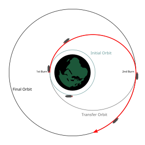
Орбитален трансфер на Хохман
Космическите мисии звучат като начинание за богати нации и още по-богати
визионери, но на практика голяма част от успеха на една мисия не зависи
от броя на нулите в банковата сметка, а от броя на уравненията, които
сме готови да решим. В Космоса не побеждава най-мощният двигател, а
най-прецизният маршрут. Това превръща задачата за оптимална траектория в
математическа битка за енергия, време и точност – битка, в която
красивите идеи на анализа, геометрията и вариационното смятане намират
съвършено реално приложение. И тук не говорим просто за формула, която
да пуснем на компютъра да смята, а за математическо бижу, опростено
дотолкова, че да може да ни даде достатъчно прецизен отговор в реално
време.
Когато изстрелваме ракета в орбита или към друга планета, най-основното
уравнение, което описва нейното движение, е производно на втория закон
на Нютон: $$ \frac{d}{dt} \left( m(t) \cdot v(t) \right) =
F_{\text{двигател}} - F_{\text{гравитация}} - F_{\text{съпротивление}}
$$
Сложността идва от факта, че масата \( m(t) \) не е постоянна – ракетата
изразходва гориво и олеква. Това води до класическото уравнение на
Циолковски за ракета с променяща се маса: $$ \Delta v = v_e \cdot \ln
\left( \frac{m_0}{m_f} \right) $$ където:
\( \Delta v \) — нужната промяна в скоростта (т.нар. „делта-ви“)
\( v_e \) — ефективната скорост на изгорелите газове
\( m_0 \) — началната маса (с гориво)
\( m_f \) — крайната маса (след изгаряне на горивото)
Това уравнение поставя математическа граница на възможното: дори при
най-добрите двигатели, ако не планираме траекторията си умно, просто
няма да имаме достатъчно гориво.
В най-общ смисъл, оптимална траектория е такава, която минимизира или
максимизира определена целева функция – например минимизиране на
изразходеното гориво, минимизиране на времето за достигане на целта или
максимизиране на натоварването (т.е. колко полезен товар може да носи
ракетата).
На математически език това се нарича вариационна задача – намиране на
функция \( x(t) \), която прави даден функционал \( J[x] \) екстремен.
Най-простият пример за такава оптимална траектория е
орбиталният трансфер на Хохман (Hohmann transfer orbit) – движение от една орбита до друга чрез два кратки „тласъка“
(маневри) – един за ускоряване и един за корекция в целевата орбита. В
геометричен смисъл това е елипса, чийто перихелий е в началната орбита,
а афелий – в целевата. Това е най-енергийно ефективният начин да сменим
орбити, когато те са в една равнина и не са твърде далеч една от друга.
Когато трябва да се стигне до Марс обаче, проблемът се усложнява -
планетите се движат, ракетата не може да следва просто елипса, защото
има гравитационни въздействия от други тела. В такива случаи се
използват гравитационни прашки (gravity assists) – техника, при която
ракетата се приближава до планета и използва нейната гравитация, за да
промени посоката и скоростта си. Математическият модел тук включва
интегриране на системи от обикновени диференциални уравнения с начални
условия, често решавани числено (напр. чрез метода на Рунге–Кута). Дори
и най-простата симулация на такава система изисква описване на вектори
на скорост и позиция, текуща гравитационна сила, която зависи от
разстоянието, корекции от взаимодействия с други тела.
И все пак примерът с Falcon 9 е показателен за успех в
преизползваемостта на ракетите. След като ракетоносителят достави товара
в орбита, той се завръща към Земята и каца вертикално. Моделирането на
тази траектория включва ускорение при спускане, управлявани корекции
чрез „cold gas thrusters“, забавяне чрез т.нар. „retro-burn“ (контра
тласък) и атмосферно съпротивление, което не е пренебрежимо. Всичко това
се изчислява в реално време от бордовата система на ракетата, която
използва алгоритми за числена интеграция и управляващи функции, базирани
на текущите сензорни данни. Така математиката не просто описва
движението – тя го управлява.
В крайна сметка, пътешествието в Космоса не е само мечта за технологично
могъщество или финансова доминация, а триумф на математическата
прецизност. От древните конични сечения на Аполоний до законите на
Кеплер и съвременните алгоритми за траектории, математиката е
двигателят, който превръща невъзможното в реалност. Тя ни позволява да
измерваме невъобразими разстояния, да планираме енергийно ефективни
маршрути и да управляваме сложни системи като кацането на ракета.
Затова, когато погледнем към звездите, нека си спомним, че зад всеки
космически полет стои силата на уравненията и геният на математическата
мисъл.
Yuan Li, Changzhu Wei, Yanfeng He, Renyi Hu, "A convex approach to
trajectory optimization for boost back of vertical take-off/vertical
landing reusable launch vehicles", Journal of the Franklin
Institute, Volume 358, Issue 7, 2021, Pages 3403-3423